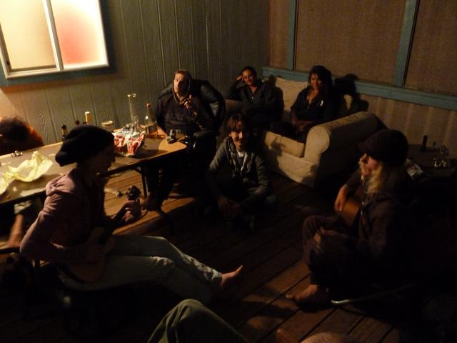

Roadtrip 2012: Yosemite climbing and highlining
This trip report has turned into an epic, so let me say before I lose your attention: thank you to Sarah Shimer for lending us your Yosemite climbing guide! The book has grown a 6-pack like appendage, let me know how I can get it all back to you.
Hannah and I drove from Seattle to Anaheim and back. We drove 3973.4 miles, using 92 gallons of gas at an average price of $4.18 per gallon. That is 43.2 miles per gallon. Go 1995 Honda Civic!
In addition to burning fossil fuels, we had a bunch of adventures. The first few days of the trip were mostly about getting to Anaheim for the Annual meeting of the Division of Atomic, Molecular and Optical physics of the American Physics Society (DAMOP). Attending this conference was the reason (excuse) for the trip to begin with.
We did have some fun on the way down, though. First stop after Seattle was Smith Rock. Hannah led a 5.7ish sport route, and we climbed Karate Crack, anticipating crack climbing to come (I am actually in this picture, can you find me?):
After a quick morning of climbing, we blasted through the desert of eastern Oregon into Northern California, stopping only to play the ukulele and paint a watercolor while fending off seagulls from our bagels (bagulls?)
Soon Mt. Shasta dominated the views for a few hours. Our route ended up giving us views of what seemed like all sides of the mountain.
We stopped in Davis, CA and stayed with friends who live in a neighborhood where all the streets are named after Lord of the Rings characters or places (Rivendell nursery school?). We also met up with slacklining friends, who rigged the longest slackline I've yet attempted to walk (482 feet of heavy polyester webbing):
After this, we don't have any pictures of the rest of the drive or of the entire week in Anaheim, partly because we couldn't find the camera in the messy car, and partly because strip malls were the main landscape feature in Anaheim. I did present this awesome poster during that time:
After the conference, we tried to escape the LA area as quickly as possible, only to be thwarted by a brush fire that entirely closed I-5 north of the city. We had to divert around, and saw lots of windmills as a result:
After camping in some random but lovely woods, we decided to drive back to the Sacramento area for another Backyard Highline Festival. We played more ukulele with the highliners:

The next morning, Hannah got on her first highline:
We watched Jerry Miszewski, all around slackline baddass, cruising a 400' highline:
I got surrounded by blue:
After the highline fest, it was finally time to head to Yosemite. I had this feeling of nervous excitement as we got closer and closer. Now, I've seen a lot of pictures and videos of Yosemite valley, but actually being there looking up at those cliffs is something else. None of the pictures do it justice, so I am going to refrain from posting all the landscape shots that we took along with all the other gaping tourists. They just don't capture the way everything towers over you.
A little sobering was the helicopter rescue we witnessed on the first day we were there:
We camped outside the park on the first night, then got up at the crack of dawn and waited in line for a spot at camp 4. We got a spot for the 7 day limit. We were in site 18, way at the end near the YOSAR tents and the slackline village (the birthplace of slacklining!).
Next day, after waiting in line to get our spot, we had the rest of the day to start exploring the climbing. We decided to start with the nearest possible climbing: Swan Slab. After a harrowing 3 minute approach, we got on our first route, Oak something or other 5.6. The rock worked well for climbing. After that I led Grant's crack, and we toproped a couple 5.10s to the right of that. I've heard some reports that Yosemite granite takes some getting used to, but I didn't feel that it was that different than Leavenworth or Index. Hannah met a butterfly:
After that, it got too hot. In the afternoon, we hiked up to Camp 4 wall, the next nearest climbing after Swan slab, but got driven back by a vicious hoard of mosquitos. On the way back down, I decided to climb Half Dome. The route is extremely over-hyped, it turns out to be an easy boulder problem:
We got an early start the next day and got on our first multipitch: Commitment on Five Open Books. This is another easy approach from Camp 4. We had a little trouble finding the start of the climb. Once we got on the first pitch, I finally felt like I'd arrived in Yosemite, climbing a super fun splitter thin hand crack. The "committing" crux came at the beginning of pitch 3, but the protection is good. As usual, we didn't get any pictures of the actual climb. Sorry! The view from the top was spectacular as usual:
After walking back down, we headed by car up to Taft point to meet up with some of our highlining friends. The trailhead for Taft point is maybe 45 minutes along the road to Glacier point. After a 1 mile hike, all of a sudden you pop out of the woods to be met with a dizzying view across the valley, from a vantage point slightly higher than El Cap! It is strange to be looking down at a cliff that big. Even stranger is contemplating standing up on a thin piece of webbing with that kind of exposure below you. It took me a little while to re-convince myself that this was a good idea. The lines were just as safe as the tree lines that I had done a couple times before (quite safe!), but even though I intellectually believed that, my body felt differently. I went for it anyway:
What a feeling! That line is 100 feet, a length that I feel very comfortable with in normal circumstances, but in this case a huge shot of adrenaline hit me about 20 seconds after I stood up. This caused me to start shaking which didn't make walking the line any easier.
Hannah wasn't sure if she was ready to try standing up on a highline like this, but she slid out on it to check out the exposure:
Thinking about it:
Going for it!:
Post crazy upside down whipper:
We camped up there that night (shhhh don't tell), and spent the whole next day up there. I helped rig another highline, 170' of double type-18 in an even more exposed location than the 100' line. 170' of double layer webbing is right at the limit of what I've been able to do in the past as a highline, so I wasn't entirely confident about being able to walk this line. I took a few falls while getting a feel for the line, and then finally made it across:
Strangely, having to fight a little more just to stay on the line made crossing it less scary, since I had less brainpower to devote to thinking about how far down it was.
We cooked dinner up there and stayed for the sunset, then headed back down to camp 4.
Breaking the landscape shot rule:
Taking a highline whipper left Hannah feeling bold and ready to try new things. The next morning, she got on her first ever trad lead, which she felt so good about that she belayed me up and continued leading for two more pitches to the top of Swan Slab. Here she is at the top:
One of the (potentially) fun things about camp 4 is that unless you are a party of 6, you are assigned campsite neighbors. We had some good and some not so good neighbors, but one of the best was a super enthusiastic med student from Texas named Robert. Robert and I climbed Serenity Crack/Sons of Yesterday which was awesome and documented here.
Too soon, our camping limit of 7 days was up. Many guidebooks list a 14 day max, so it seems like the limit is going down quickly. I hope that doesn't continue. On our last day, we packed up camp and then headed up the camp 4 wall, well prepared with mosquito repellant. "Yosemite Valley Free Climbs" claims to have upgraded the infamous valley sandbags, and maybe the climb just isn't my style, but Doggie Deviations 5.9 felt harder than most 10s I got on there and elsewhere.
Finally, I had gotten a tip about one more highline that I couldn't pass up. We hiked the 4 miles up to Yosemite falls, and met up with the people who had rigged this:
The view down for the top of the falls:
The wind was raging, the waterfall was rushing, and again I wasn't sure if this was a good idea:
OK here we go:
Steady...
Arrrrrrggg!
Woohoo!
The wind and the water and the spray added a whole other dimension to this line. Also, the view straight down the falls from the line was crazy and undulating, but I wasn't in a position to take a picture.
Near the falls, we stopped for a game of mother nature's tic-tac-toe
After getting down, we had to stay for one last valley sunset:
The drive home went quicker than expected. We went from just outside Yosemite to Arcata, CA the next day, with a quick stop in San Francisco. We stayed with more slacklining friends in Arcata, and had a day of longlining and toprope climbing at the beach:
We had plans to hang out in the redwoods for a day, but it started pouring rain. We felt very much as if we'd arrived back in the Northwest. We had a very nice, and very wet, half hour hike among the dinosaur-like trees. Then we just drove home.
This post was originally published as a UW Climbing Club trip report.